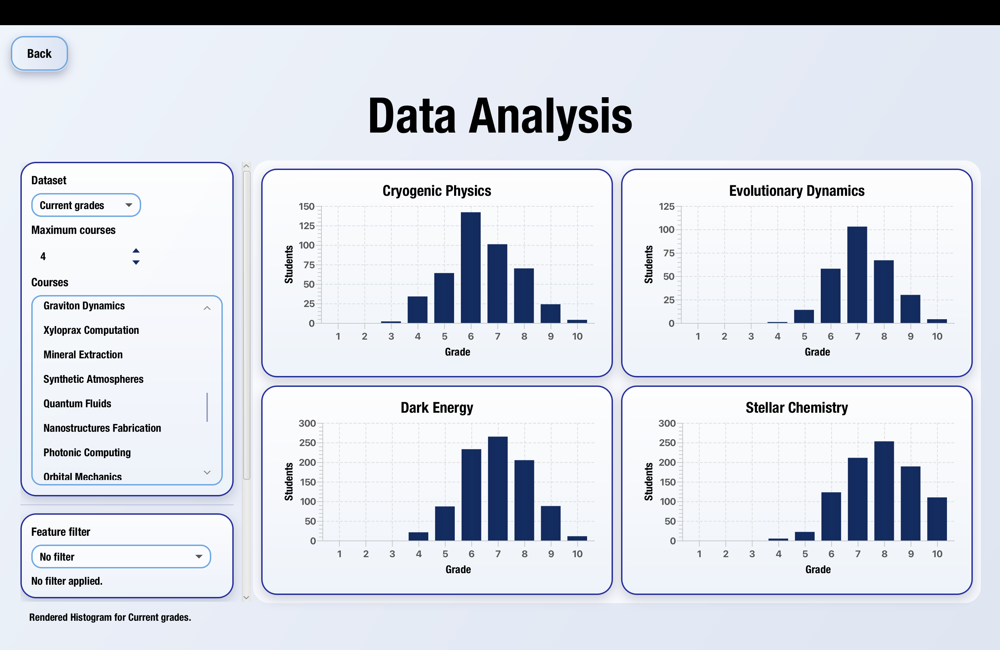
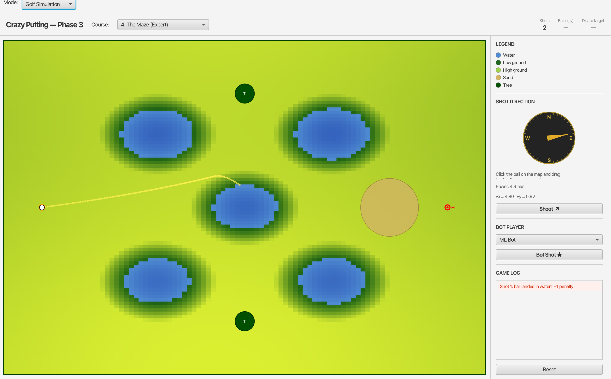
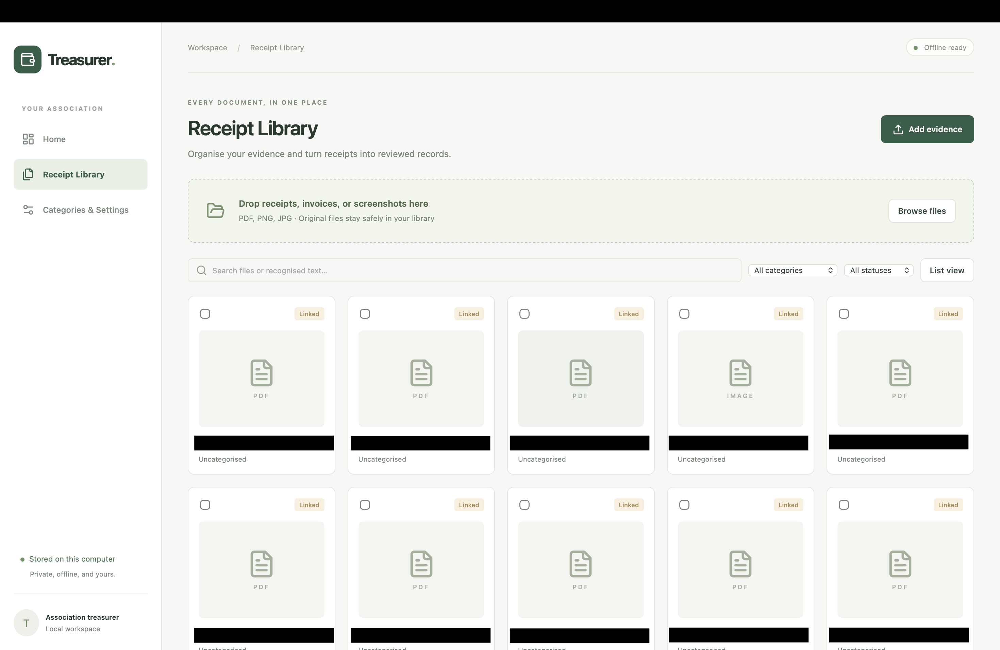
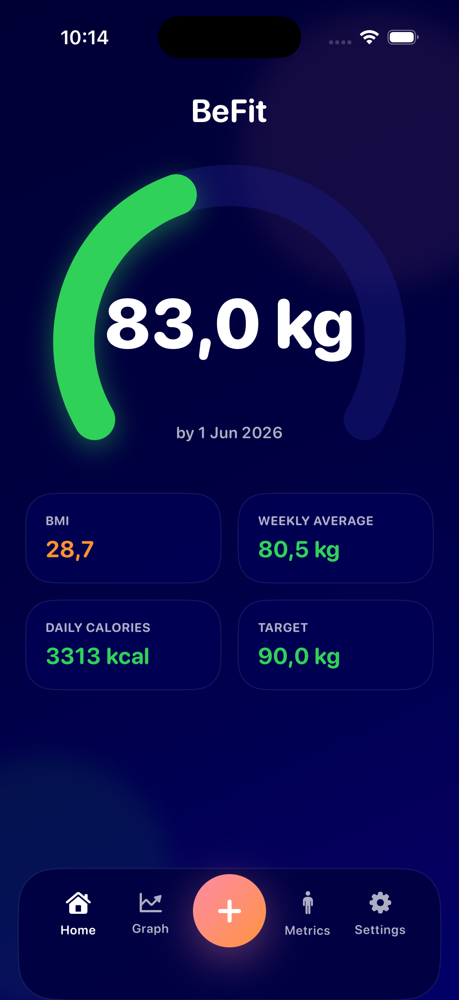

Intern / Ericsson
Working on telecommunications KPI clustering and classification for software and hardware change analysis.
Maastricht University / Class of 2028 · KE@Work Honours Programme
I’m a second-year Data Science and Artificial Intelligence student exploring machine learning, deep learning, and agentic AI. I’m looking for real-world experience that turns these interests into useful work.
01 / Projects

Completed · Team leader · 6-person team
An interactive Java dashboard for exploring student grades and predicting subject outcomes, combining data visualisation with a custom tree-based model.

Completed · Team member · 6-person team
A golf simulator combining numerical physics with automated shot selection, exploring rule-based strategies, hill climbing, and regression-based optimisation.

Completed · Solo project
A desktop finance workspace for student associations, bringing together local receipt recognition, transaction management, and portable backups. Built as a productivity tool for my Treasurer position at MSV Incognito.

Completed · Solo project
An iOS weight-tracking app with offline storage, progress visualisation, and optional iCloud synchronisation.
02 / Experience
Working on telecommunications KPI clustering and classification for software and hardware change analysis.
Gained exposure to banking operations, organisational structure, and financial services. Engaged with professionals across departments to understand how the bank operates.
03 / Tools & Skills
Developing through study and experience.
Java · Python · SQL · Git
NumPy · pandas · scikit-learn · PyTorch
Machine learning · Deep learning · Agentic AI
04 / Education
Maastricht University · 2025–2028
KE@Work Honours Programme
Warsaw · 2021–2025
Mathematics, Economics, and Computer Science
05 / About
Since 2026, I’ve served as Treasurer of MSV Incognito, managing and recording finances for the student association at Maastricht University’s Department of Advanced Computing Sciences.
I’ve been powerlifting since 2022 and am preparing for my first amateur competition. I also have a longstanding interest in economics and econometrics, and played tournament tennis from 2015 to 2022.
In 2024, I led sponsorship and school outreach for a Warsaw high school football tournament and participated in RaszMUN.
06 / Contact